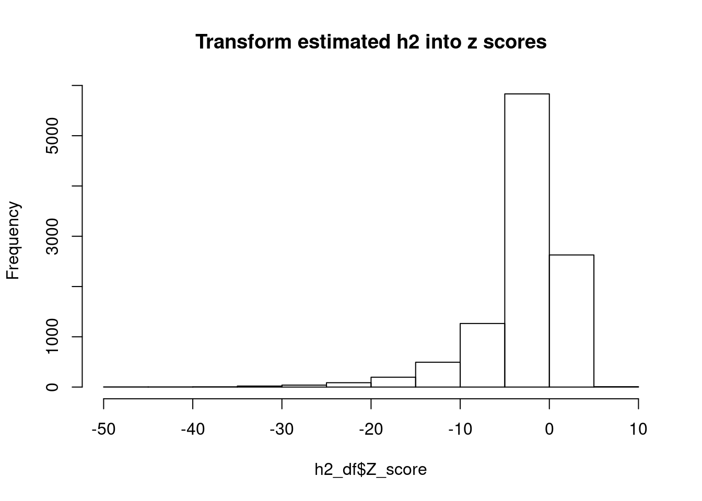
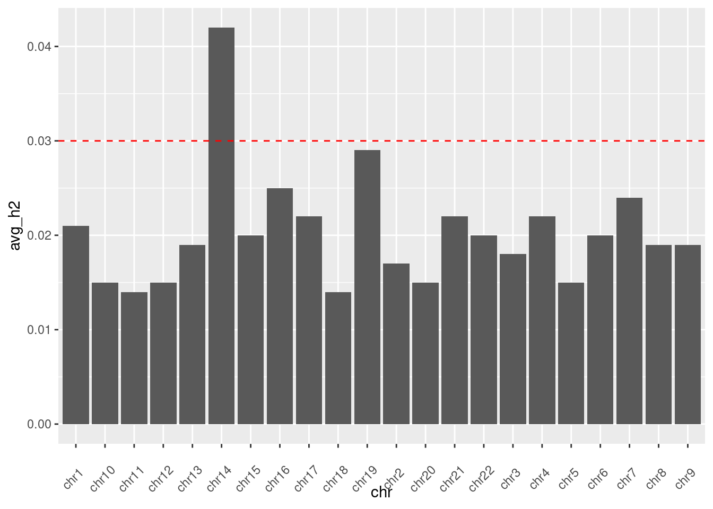
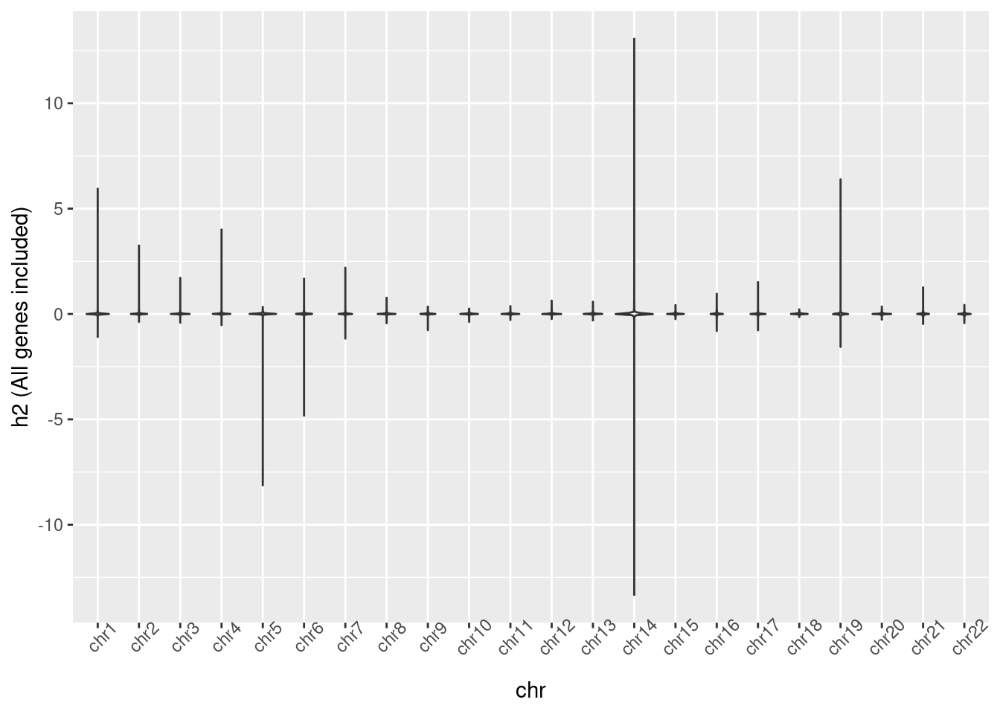

results
Last updated: 2020-07-23
Checks: 7 0
Knit directory: partition_heritability/
This reproducible R Markdown analysis was created with workflowr (version 1.6.0). The Checks tab describes the reproducibility checks that were applied when the results were created. The Past versions tab lists the development history.
Great! Since the R Markdown file has been committed to the Git repository, you know the exact version of the code that produced these results.
Great job! The global environment was empty. Objects defined in the global environment can affect the analysis in your R Markdown file in unknown ways. For reproduciblity it’s best to always run the code in an empty environment.
The command set.seed(20200622) was run prior to running the code in the R Markdown file. Setting a seed ensures that any results that rely on randomness, e.g. subsampling or permutations, are reproducible.
Great job! Recording the operating system, R version, and package versions is critical for reproducibility.
Nice! There were no cached chunks for this analysis, so you can be confident that you successfully produced the results during this run.
Great job! Using relative paths to the files within your workflowr project makes it easier to run your code on other machines.
Great! You are using Git for version control. Tracking code development and connecting the code version to the results is critical for reproducibility. The version displayed above was the version of the Git repository at the time these results were generated.
Note that you need to be careful to ensure that all relevant files for the analysis have been committed to Git prior to generating the results (you can use wflow_publish or wflow_git_commit). workflowr only checks the R Markdown file, but you know if there are other scripts or data files that it depends on. Below is the status of the Git repository when the results were generated:
Ignored files:
Ignored: .ipynb_checkpoints/
Untracked files:
Untracked: README.html
Untracked: analysis/.ipynb_checkpoints/
Untracked: analysis/compare_with_other_eQTLs_analyiss.Rmd
Untracked: output/total_h2_for_each_gene_chr22.txt
Note that any generated files, e.g. HTML, png, CSS, etc., are not included in this status report because it is ok for generated content to have uncommitted changes.
These are the previous versions of the R Markdown and HTML files. If you’ve configured a remote Git repository (see ?wflow_git_remote), click on the hyperlinks in the table below to view them.
| File | Version | Author | Date | Message |
|---|---|---|---|---|
| Rmd | 53fb47d | Jing Gu | 2020-07-23 | wflow_publish(“analysis/results.Rmd”) |
| html | 0d6c096 | Jing Gu | 2020-07-23 | Build site. |
| Rmd | 9249dba | Jing Gu | 2020-07-23 | wflow_publish(“analysis/results.Rmd”) |
| html | 8b98880 | Jing Gu | 2020-07-13 | Build site. |
| Rmd | 549e1b3 | Jing Gu | 2020-07-13 | run analysis over chr21 and chr22 |
| html | 6681a1f | Jing Gu | 2020-07-09 | Build site. |
| html | 9df76c1 | Jing Gu | 2020-07-09 | Build site. |
| Rmd | b8ec4db | Jing Gu | 2020-07-09 | wflow_publish(“analysis/*“) |
Scale h2 for each gene
- The numbers of cis SNPs for each gene were calcualted. Cis SNPs are defined as +/- 1Mb away from TSS of genes.
- The h2 value for each gene from LDSC output was scaled as \[ \hat h_{s}^2 = \hat h^2 * \frac{\text{# of cis SNPs}}{M_{total}} \] , where \(M_{total} = 9254535\) - the total number of genome-wide SNPs from 1000 genome.
Summarize SNP heritabilities for gene expression
- Any genes with negative total h2 were excluded in the analysis.
ref_dir<-"/project2/xuanyao/jing/data/eQTLGen"
out_dir<-"/project2/xuanyao/jing/project/results/total_h2"
h2<-lapply(1:22, function(i){
f<-read.table(paste0(out_dir, sprintf("/chr%d_total_h2_stats.txt", i)), header = T)
chr<-rep(paste0("chr", i), dim(f)[1])
return(data.frame(f, chr))
})
h2_df<-do.call(rbind, h2)
print(paste0("The mean total h2 across genes without any filtering is ", round(mean(h2_df$h2[h2_df$h2 >= 0]),2)))[1] "The mean total h2 across genes without any filtering is 0.04"print(paste0("The standard deviation of total h2 values across genes are ", sd(h2_df[h2_df$h2 >= 0, "sd"])))[1] "The standard deviation of total h2 values across genes are 2566.80482162777"print(paste0(round(100*sum(h2_df$h2[h2_df$h2 >=0]>=1)/dim(h2_df)[1],1), "% of the genes have estimated h2 to be higher than 1."))[1] "0.1% of the genes have estimated h2 to be higher than 1."- Any genes with estimated h2 higher than one were excluded in the analysis.
Average heritability estimate was calculated as
\[ \frac{\sum_{1}^nh^2_{g}}{n} \]
h2_df_raw<-h2_df
h2_df<-h2_df[h2_df$h2 >=0 & h2_df$h2<=1, ]
print(paste0("Average heritability estimate was calculated to be ", round(sum(h2_df$h2)/dim(h2_df)[1],3)))[1] "Average heritability estimate was calculated to be 0.03"#take count of standard deviation
h2_df[,"Z_score"]<-(h2_df$h2-mean(h2_df$h2))/h2_df$sd
hist(h2_df$Z_score, main = "Transform estimated h2 into z scores")
#Further filter h2 by within two standard deviations of average h2
#h2_df_correct<-h2_df
#h2_df<-h2_df_correct[h2_df$Z_score>=-2 & h2_df$Z_score<=2,] Observations:
- The overall average cis-heritability estimate for blood was calculated to be 0.156, which is within the known range for cis-SNP heritability for RNASeq and ChIP-Seq (2%-20%).
- Split by chromosome
avg_h2_by_chr<-unlist(lapply(h2, function(i){
return(round(sum(i$h2[i$h2 >= 0])/dim(i)[1],3))
}))
avg_h2_df<-data.frame(paste0("chr", 1:22), avg_h2_by_chr)
colnames(avg_h2_df)<-c("chr", "avg_h2")
p<-ggplot(avg_h2_df, aes(x = chr, y = avg_h2)) +
geom_bar(stat = "identity") +
theme(axis.text.x = element_text(angle = 45, vjust = -0.000005)) +
geom_hline(yintercept=0.03, color = "red", linetype="dashed")
p
###Violin plots of distribution of h2 for each chromosome
p2<-ggplot(h2_df_raw, aes(x = chr, y = h2)) + geom_violin() +
theme(axis.text.x = element_text(angle = 45)) +
ylab("h2 (All genes included)")
ggtitle("Distribution of estimated h2 across chromosomes")$title
[1] "Distribution of estimated h2 across chromosomes"
attr(,"class")
[1] "labels"p2
p3<-ggplot(h2_df, aes(x = chr, y = h2)) + geom_violin() +
geom_boxplot(width=.1) +
theme(axis.text.x = element_text(angle = 45)) +
ylab("filtered_h2")
ggtitle("Distribution of estimated h2 across chromosomes")$title
[1] "Distribution of estimated h2 across chromosomes"
attr(,"class")
[1] "labels"p3
| Version | Author | Date |
|---|---|---|
| 0d6c096 | Jing Gu | 2020-07-23 |
Observations:
- The average heritability for gene expression varies across chromosomes. Chr7, chr14, chr16 and chr19 have higher average heritability compared to other chromosomes.
- The distributions of estimated heritability differ between chromosomes. Certain chromosomes such as chr5, chr6, and chr14 have extreme negative h2, while others have h2 values higher than one.
- After filtering the negative and greater than one h2 values, estimated h2 across chromosomes dislay simialr distributions.
Correlation between cis-SNPs’ heritatblities with gene characteristics
- gene length (overall)
plot(x=h2_df$gene_length, y=h2_df$h2, xlab = "gene length", ylab = "estimated h2",
main = "Heritabiltiy vs.gene length")
cor(h2_df$gene_length, h2_df$h2)[1] -0.04826811- gene length by binS
Note:
- equal number of genes in each bin
h2_df[, "bin"]<-cut_number(h2_df[,"gene_length"], n = 20)
ggplot(h2_df, aes(x=bin, y=h2) ) +
geom_boxplot(fill="#69b3a2") +
xlab("Gene length by bins") +
ylab("Estimated h2") +
theme(axis.text.x = element_text(angle = 90, vjust = -0.5)) +
ggtitle("Estimated h2 against gene lengths divided into 20 bins")
| Version | Author | Date |
|---|---|---|
| 0d6c096 | Jing Gu | 2020-07-23 |
Observations:
- Overall, estimated heratibility has no correlation with gene length based on correlation coefficient and scatter plot.
When we divided gene length into bins, genes in the lowest three or four quantiles seem to have higher estimated h2 values. More rigorous statistical tests need to be performed to compare the distributions. Nontheless, it is not obvious to me that there is a trend among the h2 with respect to gene length.
Convervation scores
| Version | Author | Date |
|---|---|---|
| 0d6c096 | Jing Gu | 2020-07-23 |
| Version | Author | Date |
|---|---|---|
| 0d6c096 | Jing Gu | 2020-07-23 |
Observations:
- The scatter plot shows that genes are either highly conserved or not conversed are enriched with low estimated h2. Genes with low pLI scores seem have a higher proportion with high estimated h2.
- Again, the trend is not obvious when dividing conservation scores by bins.
4.EDS scores and number of enhancers
h2_df[,"EDS"]<-unlist(lapply(h2_df$gene_id, function(i){
if(as.character(i) %in% ref$GeneSymbol){
return(ref[ref$GeneSymbol == as.character(i), "EDS"][1])
}else{
return(NA)
}
}))
h2_df[, "EDS_bin"]<-cut_number(h2_df[,"EDS"], n = 20)
plot(y = h2_df$h2, x = h2_df$EDS, main = "Estimated heritability vs. EDS Scores",
xlab = "EDS scores", ylab = "Estimated h2")
| Version | Author | Date |
|---|---|---|
| 0d6c096 | Jing Gu | 2020-07-23 |
ggplot(h2_df[!is.na(h2_df$EDS),], aes(x=EDS_bin, y=h2) ) +
geom_boxplot(fill="#69b3a2") +
xlab("EDS scores by bins") +
ylab("Estimated h2") +
theme(axis.text.x = element_text(angle = 90, vjust = -0.5)) +
ggtitle("Estimated h2 against EDS scores divided into 20 bins")
| Version | Author | Date |
|---|---|---|
| 0d6c096 | Jing Gu | 2020-07-23 |
h2_df[,"num_enhancers"]<-unlist(lapply(h2_df$gene_id, function(i){
if(as.character(i) %in% ref$GeneSymbol){
return(ref[ref$GeneSymbol == as.character(i), "ActivityLinking_EnhancerNumber"][1])
}else{
return(NA)
}
}))
plot(y = h2_df$h2, x = h2_df$num_enhancers, main = "Estimated heritability vs. Activity_linking_enhancer_numbers",
xlab = "Enhancer numbers", ylab = "Estimated h2")
| Version | Author | Date |
|---|---|---|
| 0d6c096 | Jing Gu | 2020-07-23 |
h2_df[, "num_enhancers_bin"]<-cut_number(h2_df[,"num_enhancers"], n = 20)
ggplot(h2_df[!is.na(h2_df$num_enhancers),], aes(x=num_enhancers_bin, y=h2) ) +
geom_boxplot(fill="#69b3a2") +
xlab("Number of enhancers by bins") +
ylab("Estimated h2") +
theme(axis.text.x = element_text(angle = 90, vjust = -0.5)) +
ggtitle("Estimated h2 against activity linking enhancer numbers divided into 20 bins")
| Version | Author | Date |
|---|---|---|
| 0d6c096 | Jing Gu | 2020-07-23 |
Observations:
- The scatter plots of EDS scores and Enhancer numbers seem to be noisy to see the signal.
- It is also hard to see the trend.
sessionInfo()R version 3.5.1 (2018-07-02)
Platform: x86_64-pc-linux-gnu (64-bit)
Running under: Scientific Linux 7.4 (Nitrogen)
Matrix products: default
BLAS/LAPACK: /software/openblas-0.2.19-el7-x86_64/lib/libopenblas_haswellp-r0.2.19.so
locale:
[1] LC_CTYPE=en_US.UTF-8 LC_NUMERIC=C
[3] LC_TIME=en_US.UTF-8 LC_COLLATE=en_US.UTF-8
[5] LC_MONETARY=en_US.UTF-8 LC_MESSAGES=en_US.UTF-8
[7] LC_PAPER=en_US.UTF-8 LC_NAME=C
[9] LC_ADDRESS=C LC_TELEPHONE=C
[11] LC_MEASUREMENT=en_US.UTF-8 LC_IDENTIFICATION=C
attached base packages:
[1] stats graphics grDevices utils datasets methods base
other attached packages:
[1] ggplot2_3.1.1
loaded via a namespace (and not attached):
[1] Rcpp_1.0.4.6 compiler_3.5.1 pillar_1.3.1 later_0.7.5
[5] git2r_0.26.1 plyr_1.8.4 workflowr_1.6.0 tools_3.5.1
[9] digest_0.6.18 evaluate_0.12 tibble_2.1.1 gtable_0.2.0
[13] pkgconfig_2.0.2 rlang_0.4.0 yaml_2.2.0 withr_2.1.2
[17] stringr_1.3.1 dplyr_0.8.0.1 knitr_1.20 fs_1.3.1
[21] rprojroot_1.3-2 grid_3.5.1 tidyselect_0.2.5 glue_1.3.0
[25] R6_2.3.0 rmarkdown_1.10 purrr_0.3.2 magrittr_1.5
[29] whisker_0.3-2 backports_1.1.2 scales_1.0.0 promises_1.0.1
[33] htmltools_0.3.6 assertthat_0.2.0 colorspace_1.3-2 httpuv_1.4.5
[37] labeling_0.3 stringi_1.2.4 lazyeval_0.2.1 munsell_0.5.0
[41] crayon_1.3.4